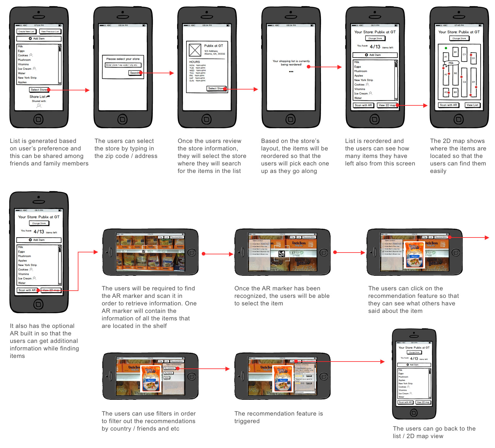
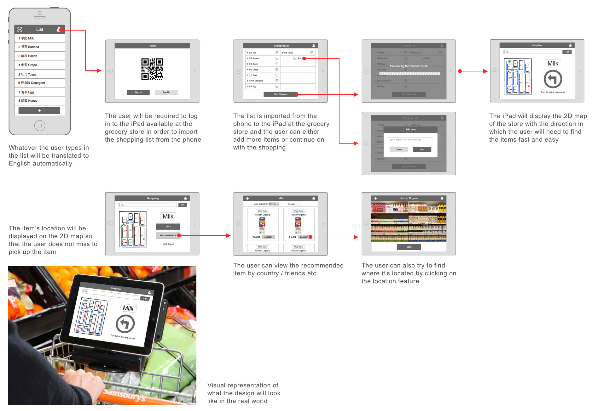
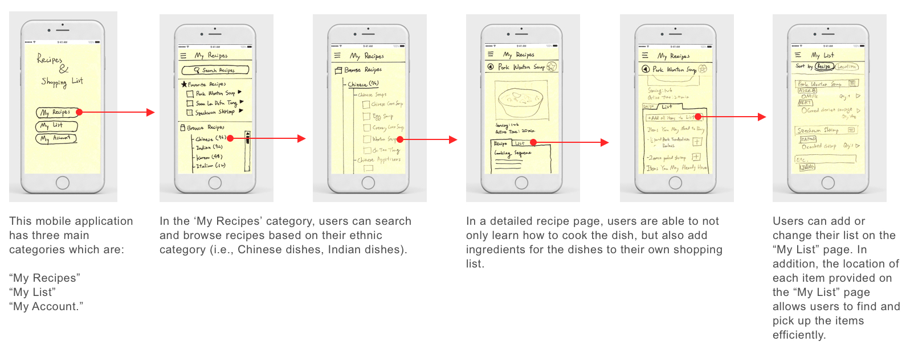
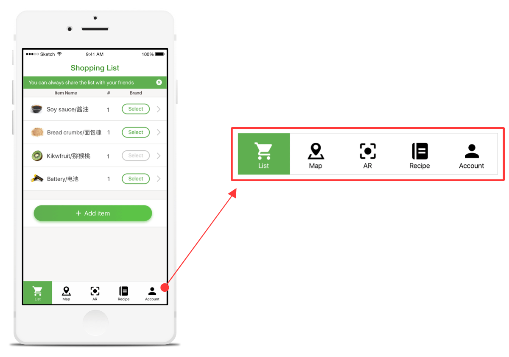
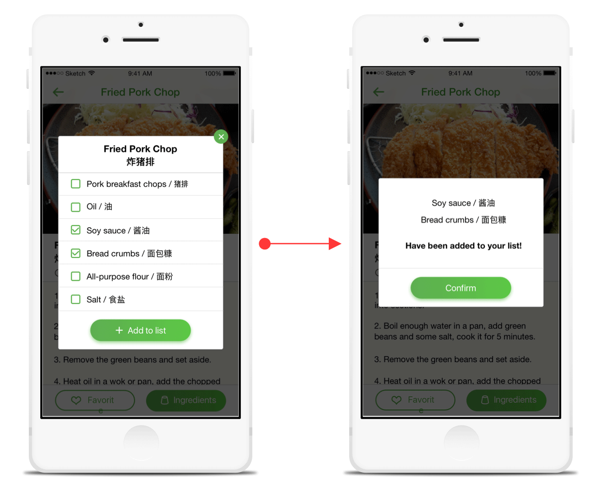
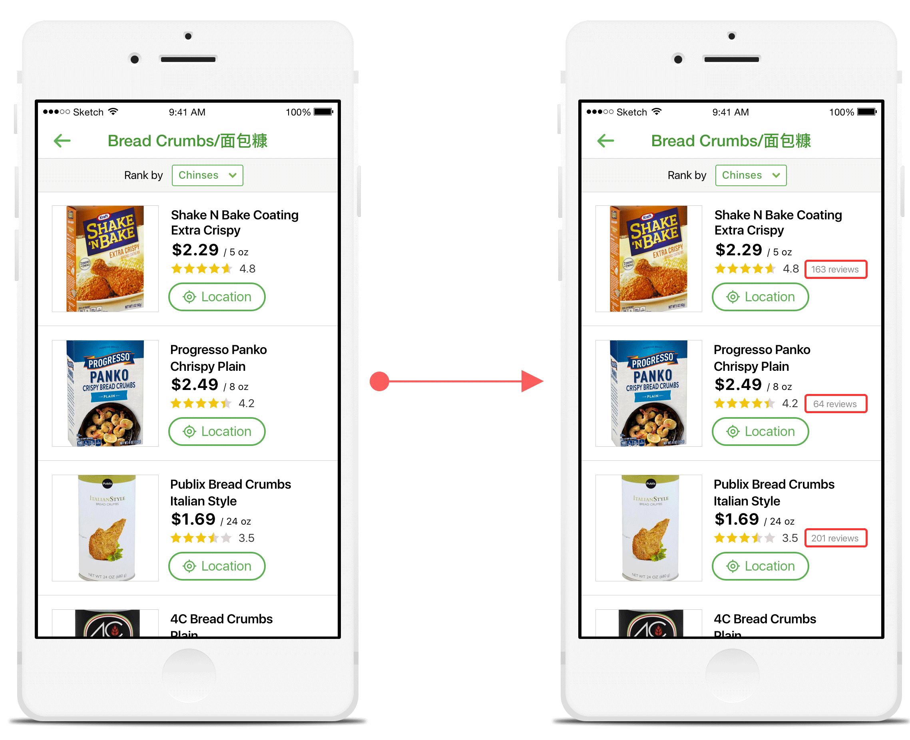
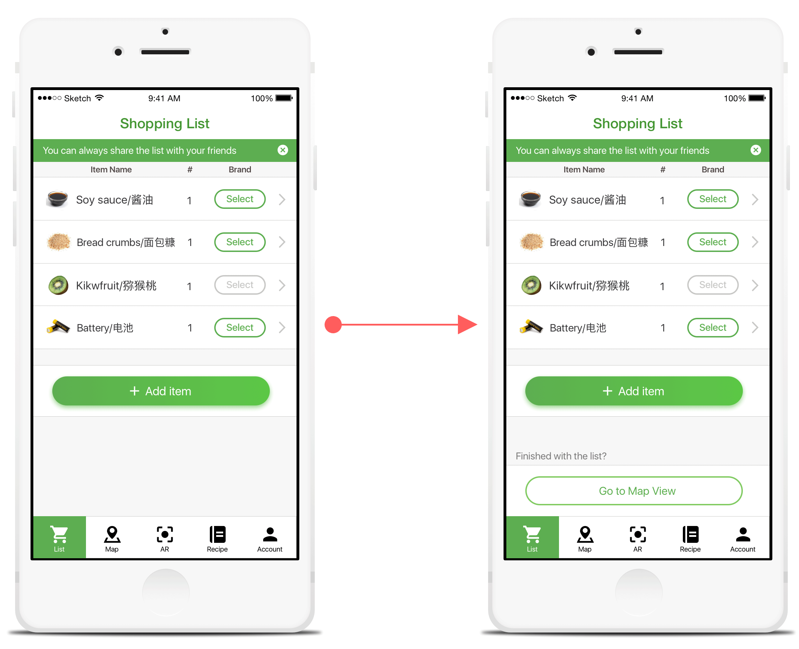
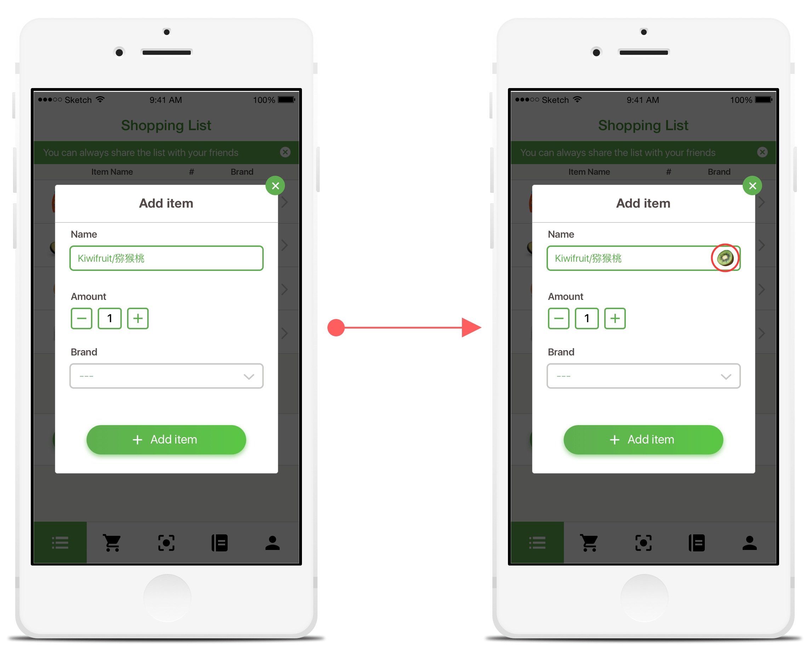
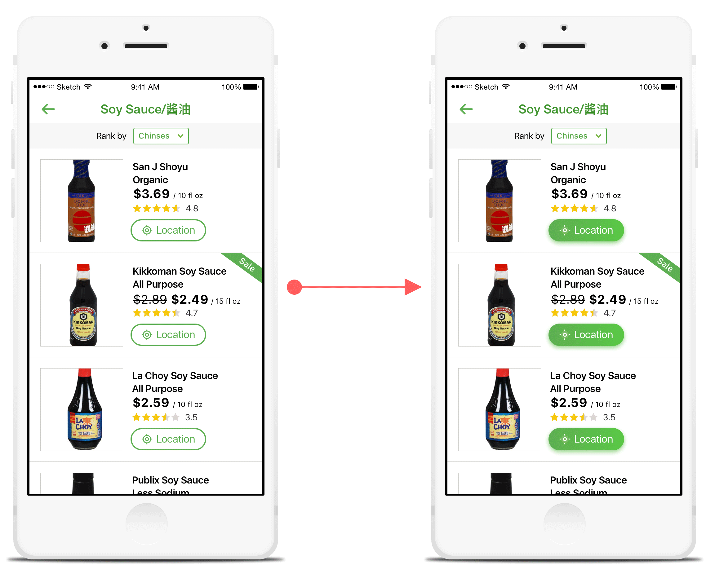

Out of the 45 teams that have been selected as finalists for the CIC competition held by Georgia Tech Research Network Operations Center (RNOC) and the Institute for People and Technology (IPaT), we received 2nd place in the "Life Long Health and Well-Being" category.
The products were evaluated by over 30 judges from a variety of different companies around Atlanta.
For more details about the project, please read the design process and watch the video which will help you understand better of our idea.
Create a way to improve grocery shopping experience for the international students who struggle in:
• Switching back and forth between multiple applications
• Translating items from their own language to English
• Spending too much time locating items and retrieving information about them
• Making a decision to buy an appropriate brand for the items
We conducted research (interviews and contextual inquiries) on the international students at Georgia Tech to find out about their hardships and needs when they go grocery shopping. Based on the data gathered, we analyzed by doing an affinity diagramming activity and created personas as well as journey maps. This helped us to understand the users better so that we could design a better solution for them. So, the three ideas with different characteristics were generated and presented to our peers for feedback and evaulation. Ultimately, with multiple iterations, we came up with a mobile application called Grocery HelpAR.
Grocery HelpAR enables users to:
• Generate a grocery list either manually or from importing the ingredients from the recipe tab
• Discover a one to one translation of the items
• View the location of the items in a specific store as well as the user's current location on a top-down 2D map
• View recommendations of a specific item based on ratings and feedback from other people
• Scan a random item in the store with the Augmented Reality (camera) feature to retrieve information quickly
Everyone participated throughout the research process until we arrived at our three possible solutions (ideas). During the research phase, I took charge in creating the personas and the journey maps of our potential users. After that, I came up with the wireframes and the user flow for the optional AR concept which ended up as our final solution. Furthermore, I took charge of creating the high fidelity designs for the mobile application using Sketch and with the help from another team member, Shuhan Yang, we finalized the design. Also with Invision, I created an interactive prototype of the application. Lastly, to brand our product, I quickly contructed a website of our application with HTML, CSS, JS and Bootstrap.
August 2016 - December 2016
Geunbae Lee | Dongwhi Yoo | Miroslav Malesevic | Shuhan Yang
Balsamiq Mockups | Sketch | Invision | Unity3D | Vuforia
For our research, we initially conducted quick and open ended (unstructured) interviews to find out the current problems that the international students often face. Then, with the focus on grocery shopping experience, we conducted several semi-structured interviews and contextual inquiries to better understand the users hardships and needs.
Short, open ended interview - this helped us to explore different problems that the international students face everyday. We eventually narrowed down on designing a solution for a better grocery shopping experience.
Semi-structured interview - once we defined the problem areas, we wanted to confirm that the issue persists with our users. Semi structured interview was a great way to gather detailed feedback and responses on their experience. We aimed to discover the current problems and hardships in addition to positive or surprising experiences.
Contextual inquiry - Following the semi-structured interviews, we thought it was necessary to do some contextual inquiries so that we could witness their behaviors and processes at the store. So, we recruited several people for the study and shadowed them along while they carried out their goals and during that, we asked them to do a think-aloud (ex. of what they are trying to accomplish and why they are going in such routes and etc). While the parcticipants walked around the store, we took notes and videos for reference. After they were done with everything, we asked them some follow-up questions for more insight on their specific actions and emotions.
OurCart is a smart shopping list helper that displays prices reported by other shoppers at the stores in near areas. When one creates a list, OurCart suggests the best deal from all the stores automatically and simultaneously. Even though it focuses on saving money, it was a good reference for us because crowdsourcing the appropriate data about the users when they shop for groceries could indeed provide valuable data for our users. For example, our users would be able to check the availability and the prices of items before going grocery shopping which could help in decreasing their shopping time.
Publix App provides weekly ads, options to make a shopping list, recipes for food, display featured products that are on discount and also, give out general store information. Among these features, shopping list and recipes can act as time management tools so that when a user chooses to look up a recipe for a dish through the app, the list would show up with all the ingredients needed to make the dish. Also, the list shows the location of the items (by category only) which the user can easily pick up the items. However, the downside is that, it does not provide a bird-view map of the store.
Wunderlist is one of the most well-known ‘to do list’ app. The users can also invite family members, friends, or roommates to the customized grocery shopping list to add or subtract any items necessary. However, this app does not have a store-specific information such as price and location of the items.
For this ideation sprint, each member of the team came up with 20+ ideas that could possibly help solve the users problems. We used the creativity-feasibility map adopted from the IBM Design Thinking methodology of approaching a solution to the problem. After the map was finished, each of us "sold" our ideas and then voted. At last, three ideas were chosen to be continued as potential solutions to the problem.
This mobile application concept allows the users to generate a list of items just like any other applications. However, the difference is that from that list, the users can select a specific store to locate the items by viewing the store map in a top-down 2D style. Most importantly, the purpose of adding the AR (Augmented Reality) feature was aimed to provide a faster solution when choosing the items by overlaying information (suggestions from online community) over the product which is significantly faster than browsing for information on the internet. The idea behind the “AR shopping aid” came from the fact that everyone already have their own mobile devices that are capable of using the camera as an Augmented Reality feature.
We came up with this idea because a shopping cart is the most necessary and common assistant while shopping for groceries. Since most people typically use both hands to push around the shopping cart, we felt that it would be more natural if the interaction only took place between the user and shopping cart. The basic idea is to add a smart device with a relatively big screen like an iPad onto the shopping cart so the users don't have to use their phones. For this concept, the users would also be able to locate the items by looking down at a top-down 2D map just like the previous concept. However, the difference is that the users can make the list in their own language on a mobile application which has the automatic translation feature. The list then will be transferred to the specific shopping cart that has the specific device (iPad) is mounted on. The user would only have to sign-in to the smart device (iPad) so that the the list is loaded. The device will provide the shortest route to find the items on the list. Lastly, when the users arrive at a specific item, the device would provide a recommendation for the brand.
This solution is also a mobile application that integrates a cookbook for traditional dishes and a shopping list. We started from the fact that our target users would rather prefer to cook their own traditional dishes because most of them live alone or with roommates (away from their home country). They seldom search online recipes for their traditional dishes before going for grocery shopping which is why we thought of providing a service that generates a shopping list automatically when they decide on a recipe. Thus, the users could possibly reduce their time and effort.
1) Optional AR Concept
We received the most green stickers (great idea) for this prototype. However, some of our peers were concerned with the feasibility of being unable to scan more than one marker to display the details of the food. Also, a few mentioned that it would be more productive for the user to be able to preview the recommendation feature before coming into the store (not using the AR view).
2) Shopping Cart Concept
Just as we expected, our peers pointed out the possible theft problem occurring if the iPad / phone is mounted on the shopping carts. Therefore, for a few minutes we asked our peers about the possible solution for it. The ideas we received was to have a kiosk instead of the shopping cart which has a voice support.
3) Recipe Concept
This also had some great feedback from our peers regarding the generation of the shopping list based on the traditional dishes' recipes. Many suggested that this could be a very good implementation if this one is a prior step for the other two prototypes which was very interesting.
The participants strggled with our app's tabs because they weren't labeled. So, instead of realizing what the tabs are for instantly, they had to go through each of them to find out about the functionalities. Therefore, we decided to label the tabs.
When the participants selected the ingredients from the recipe tab so that they can transfer the items to their list, there was nothing to notify them that it has been successful. They were only able to find out if the ingredients were correctly generated by going to the list tab. Therefore, we decided to have a follow-up pop-up that the ingredients were transferred to the list.
During the user testing phase, some people recommended to have a total number of reviewers displayed so that the rating has more validation.
Some of the users didn't know their next step after generating the list of items because the relationship between "List" tab and the "Map" wasn't clear. Therefore, we decided to create a button so that the user knows what to do next which is to display the list of items on the top-down 2D map of the specific store.
This allows the users to see whether or not they are adding the correct items to their list.
During our user testing, the users still had trouble locating the item when they arrived at the place where the "Map" tab has led them. Although we provided them the "Location" button so that they can easily find the item within the shelf, some of them didn't notice the button at all. Therefore, we decided to make the button more clear.
